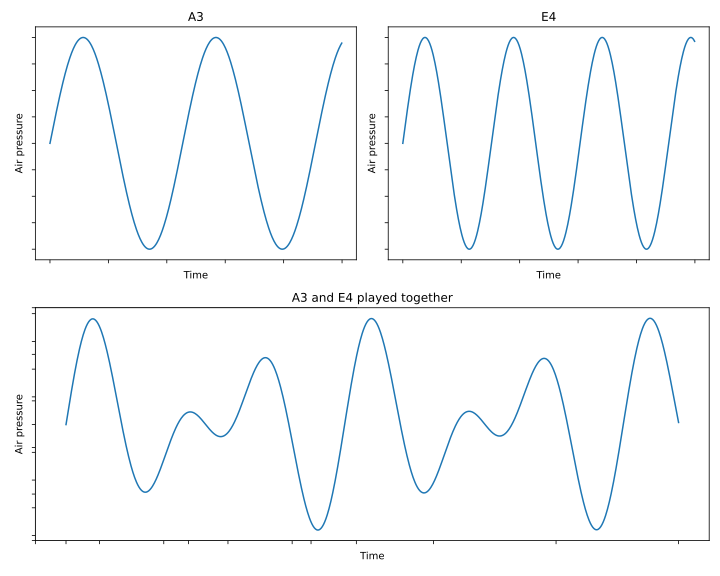
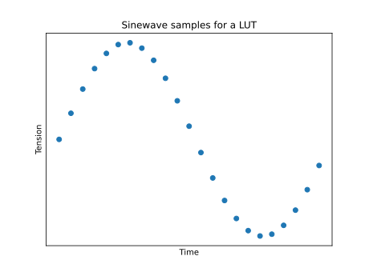
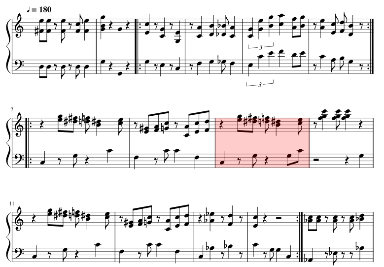

Multi-voice Sound
Generation with Arduino
Foreword
Motivations
I wrote the following article because I wanted to program the
Arduino to produce multi-voice melody and the only resource I found
was this
stackoverflow Q&A. Most of the resources I found were
incomplete or only a single-voice melody.
Now, why are you reading this? Or better, why
should you be reading this? Direct Digital
Synthesis has been around for long, sure enough there are tools out
there to produce sound with several tones on an Arduino. The S/O
link I have given does what we want; although I haven’t played
around with it much myself, the fantastic Mozzi
library will probably do most of what this article covers, if
not more.
Truth be told, I like to understand things. When there is a topic
that I find passionating, I won’t stop trying to understand it until
I get to the bottom of it. So, if you’re into sound synthesis,
messing around with Arduino and into trying to get it all sorted out
in your head, this article is for you. If your only goal is to have
fun with some noise, you might be better off with using the already
implemented tools (this project’s code, the S/O one or Mozzi’s).
A little more about what this articles actually covers after the
pre-requisites.
Pre-requisites
This article is not a start-from-scratch article. My advice is,
read the article as I give out resources to understand most of it
along the way. But keep in mind that you will have an easier time if
you already know about :
- Basic Digital
Sound Processing theory : you should be comfortable
with notions of frequency, waveforms, Nyquist-Shannon criteria,
sampling, etc ;
- Basic C/C++ and Arduino coding knowledge: be
able to turn on and off LEDs, be comfortable with basic C/C++ code
;
- Arduino’s timers : you should know they exist
and that they have several modes of operation. I won’t go into
details in this article, so it’s better if you already have some
experience with them. This
Arduino article is a nice overview of the timers’ settings and
use. The Atmega
328p datasheet is of course a great reference ;
- Binary and hexadecimal handling: this is pure
conveniency.
Now, before-hand, a nice two-step exercice would be to try
to:
- produce a note using the
digitalWrite and
delay functions provided by Arduino
- play a simple single-voice theme with that same technique, just
to ensure you are comfortable with timing and frequency
manipulations.
The equipment
Here’s what you’ll need for this project :
- An Atmega328p
based Arduino board and its adapted flash method (USB cable,
etc). I will use the Arduino Nano ;
- A 100nF capacitor and a resistor of about 100
to 1000 Ohms ;
- A piezo buzzer ;
- A breadboard ;
- Some wires.
Additionnally, an oscilloscope is a great tool for signal
debugging or simply enjoying the resulting product of one’s
work.
About the Arduino board: Having an Atmega328p
based board is not a necessity in itself. It is however the one I
will be using. Once you have covered this article and are
comfortable with the Atmega’s timer, you’ll probably be able to port
the code to some other boards.
Theory on
Direct Digital Synthesis with Arduino
From sound to voltages
Back to the basics
Let’s go back to the basics for a minute. What is sound?
Sound can be defined as the propagation of a succession
of compressions and decompressions of a material (solid,
gas or liquid). The speed at which these successions progate is
called the frequency. The frequency determines the
sound’s pitch. The higher the frequency, the higher
the pitch.
If we play a note in its purest form, the succession of
compression and decompression of that note can be represented as a
sinewave. To play two pure notes together is to sum up those two
sinewaves.

Figure — Sinewaves of A3 and E4 notes and their sum.
Now, simply put, if we want to produce a sound modelled by a
sinewave on an Arduino pin, all we have to do is to make the output
voltage vary so as to make it produce a sine signal. Replace “Air
Pressure” by “Voltage” on the graphs above, and you have our goal
output.
Tweaking the output
voltage with PWM
Okay so we want to output a varying voltage. Can we do that on
the Arduino? Yes and no.
I won’t go into length here. If you are not familiar at all with
PWM technic, here
is an article that explains it better than I would. Simply put, on
Arduino, one can only output \(0\)
V (off) or \(5\) V (on) on a
digital pin. But, if we turn on and off a pin really fast, the
perceived voltage is midway between 0 and 5 volts, because the
change happens so fast.
What you should remember is :
\(\quad\) We talk about a PWM
duty cycle, that is, a percentage of “on” time ; the
final perceived voltage is the average of
on and off time.
The function analogWrite lets us choose the
duty-cycle for a PWM output, and consequently outputs a voltage in
the range \([0, 5]\) V (note that
this range is discrete).
analogWrite(pin, 25); // 10% duty cycle
analogWrite(pin, 127); // 50% duty cycle
analogWrite(pin, 255); // 100% duty cycle
Let’s produce sound ! … Maybe
?
A first strategy for
melody generation
Now we know we can tweak an output voltage in the range \([0,5]\) V with
analogWrite. A first idea could be to sample voltage
values of a given melody at a frequency \(f_{sample}\). Then, we could do
something like:
uint8_t voltages [NB_SAMPLES] = { /* Pre-computed samples ... */}
for(uint32_t sample = 0; sample < NB_SAMPLES; ++sample)
{
setVoltage(pin, voltages[sample]);
delay(1/f_sample);
}
Now, let’s juste consider the maths here. If we take the classic
\(f_{sample} = 44.1\)kHz, we get
44,100 samples per second. So for a one-second long melody, if we
store the voltage values in some array of uint8_t , we
already have 44.1 Kbytes of data. The Atmega 328p flash memory can
only hold 32 Kbytes. So… Not a good strategy.
Look-up tables
That’s where DSP knowledge comes in handy. According to a certain
Fourier,
any sound can be approximated by a series of sinusoidal
components whose frequencies are those of the fundamental
and its harmonics. In one melody, some notes may be played multiples
times. That’s data redundancy. We need a way to hold only the
necessary data. That’s when look-up tables come in
handy.
A look-up table (LUT) is an array that contains samples allowing
for the generation of a waveform. In our case, the LUT contains
samples for a period-long frame of time, allowing the generation of
a periodical waveform (like a sinewave for example).

Figure — Sinewaves samples for a LUT.
From this one LUT, we can generate any note. We
simply need to output the values of the LUT more or less fast to
adjust the note frequency. To play a continuous note of period \(period\), considering a
uint8_t look_up_table[SAMPLES] array, the code would
look like :
while(1)
{
for(uint32_t sample = 0; sample < NB_SAMPLES; ++sample)
{
analogWrite(pin, look_up_table[sample]);
delay(period/NB_SAMPLES);
}
}
The delay is equal to \(\frac{period}{\text{NB_SAMPLES}}\)
because we want to go through the LUT in \(period\) seconds.
Now, this is getting somewhere. But how would one play two
continuous note? So far, we have an index walking through the LUT
and we delay its walk with the delay function so that
it takes a \(period\) to walk
through the LUT. But with two different notes, we have two different
periods. Should we use two indexes? Two delays? And what if we want
to play three, or four notes? And to not play them continuously ?
This would get messy…
Counting and generating
Timers and PWM
Let’s take a small break to go back to PWM. We know the theory
behind it and how to use it. But how does our micro processor
actually produces PWM? Spoiler alert : not with
delay.
PWM generation is based on timers. Again, here
is a resource that will explain it much better than I would.
Further on, we’ll consider the following properties about timers
:
\(\quad\) A timer is a
counter that counts step by step at a given frequency \(f_{cpu}\). It counts up until a top
value that can be configured using register ICR. When
the top value is reached, the timer overflows and
goes back to 0. The compare registers,
OCRA and OCRB, can hold a value that, when
reached by the timer, sets a pin output to \(5\) V. When the timer overflows, the
pin output is set back to \(0\)
V.
From this, we understand that calling analogWrite is
just setting a specific value in the OCRA or
OCRB registers.
The Atmega 328p has several timers, some are 8-bit (maximum value
is \(2^{8}-1=255\)), some are
16-bit (maximum value is \(2^{16}-1=65535\)).
The frequency at which the timer counts depends on two parameters
: the micro-processor internal clock frequency
(hardware), and the prescaler
(software). The Atmega328p has \(16\) MHz clock frequency. \(f_{cpu}\) is thus defined by:
\[f_{cpu} =
\dfrac{f_{clock}}{prescaler} = \dfrac{16
\text{MHz}}{prescaler}\]
The compare registers, OCRA and OCRB, control
specific pins. We’ll use OCRA which controls pin 9. Again, refer to
the Atmega
328p datasheet to find this information.
The phase accumulator
Back to generating sound. We want to play two notes but using
delay to keep track of where to look in the LUT is
getting messy because two different notes have two different period.
So : how do we keep track of where to look in the LUT for each
note?
Meet the phase accumulator technic. A
phase accumulator (PA) is a value that
generates a discrete-time, discrete-valued
phase argument for a lookup table. It basically
tracks down time so that we know where to look in
the LUT at any time.
Now, this
article explains how to produce an oscillator
which is basically a single-voice melody, and introduces the
phase accumulator (PA). Reading this article is almost
enough to accomplish our goal but it lacks the LUT knowledge exposed
here. Still a great resource tho, I advice you to read it as it
mentions important notes on sound quality.
Anyways, the article tells the following about the PA:

\(\quad\)The PA
(phase accumulator) is made by incrementing a counter at a
given frequency with something called a “Frequency Control
Word”.
It’s always incremented at the same time-interval (period), but
it is the “Frequency Control Word” that decides the
output-frequency.
[…] when the phase accumulator reaches its top value, it wraps
down to 0.”
Here, the bigger brains will have understood why we explained the
timer theory just before that. We are going to use the timers
coupled with a phase accumulator to keep up on where to look in the
LUT.
The article mentions a sort of overflow for the phase
accumulator. To make it easier, we’ll often choose the maximum value
for the PA to be the maximum value that can be stored in the type of
variable used to store the PA. So for example, if we choose to store
the PA in a uint16_t, its maximum value is 65535.
Now, the article mentions Frequency Control
Word, also known as the Tuning Word. One
thing that many articles like the one I mentionned do, is give away
an equation that defines the tuning word without never actually
explaining how the equation was obtained, which makes the definition
of the tuning word quite oscur. Here is a clear and detailed
explanation of that value:
The tuning word
As said previously, the idea behind the phase accumulator is to
decrease it down to zero, by using a constant decrement : the
tuning word.
The phase accumulator starts to its maximum value. It often is
\(2^N\) where \(N\) is the number of bits used for the
PA.
Say we want to generate a note \(note\) of period \(t_{out}\) using a timer of period \(t_{cpu}\). There is an integer \(n\) such as :
\[t_{out} \approx n t_{cpu} \quad\quad
(1)\]
So, the timer iterates \(n\)
times before reaching the \(note\)’s period. Hence, the PA is
decremented \(n\) times before
reaching zero. So we get the following equation for the tuning word
size \(\Delta f\):
\[\Delta f \approx \dfrac{max\_pa}{n}
\approx \dfrac{2^N}{n}\quad (2)\]
By inversing the relationship (1) to switch to the frequency
domain, we get:
\[f_{out} \approx \dfrac{1}{n}
f_{cpu}\quad\quad (3)\]
Now, let’s get \(f_{cpu}\) on
the left side of this equation and let’s multiply the equation by
\(max\_pa\) :
\[max\_pa\dfrac{f_{out}}{f_{cpu}}
\approx \dfrac{max\_pa}{n} \quad\quad (4)\]
Injecting (2) in (4), we finally get : \[ \Delta f \approx
max\_pa\dfrac{f_{out}}{f_{cpu}} \approx 2^N\dfrac{f_{out}}{f_{cpu}}
\quad\quad (5)\]
Now hopefully you understand what the tuning word is.
Recap’
Strategy
So far, our strategy to produce a note of frequency \(f\) and of period \(t= 1/f\) is :
- We store \(m\) samples of a
sinewave in a look-up table ;
- We use an Arduino timer to count one by one at frequency of
\(f_{cpu}\);
- We decrement a phase accumulator when our timer overflows ;
- We increment our look-up table index when our phase accumulator
overflows ;
- We set our compare register to the correct value in the
LUT.
So with one look-up table and \(p\) phase accumulator and indexes, we
can theoretically produce \(p\)
voices !
Constraints
I say theoretically because we’re not exactly able to produce a
1000 voices melody.
But how many voices can we fit exactly?
Understand that we are limited by our voltage levels, which is
determined by our timer resolution. Remember we can choose a voltage
output by playing with a PWM duty cycle. With an N-bit timer, the
maximum value of our timer is \(2^{N}-1\), but its TOP value can be
less than that (remember the ICR register?). So we have
\(TOP\) different voltage levels in
the range \([0,5]\) V. Remember
also that playing \(p\) voices at
the same time is equivalent to outputing the sum of their signal.
This means the number of voices \(p\) cannot exceed \(TOP \leq 2^{N}-1\).
Now, we also have to consider the limit of the flash memory.
Although we don’t have to store 44,100 samples for each second of
our melody any more, we still have to store the melody in some ways.
Let’s not forget the room is already occupied by the look-up table
and the overall algorithm we will use later on. So, even if in
theory we could go up to 65535 voices with a 16-bit timer, we won’t
actually ever go there. And it’s not like we’d need that many
anyway. Twelve voices are already enough to play an orchestral
version of the Mario Theme Music for example. A simpler version
really only needs three.
Quality considerations
Last step before diving into the code. The following are really
just information to keep in mind, quality-wise.
I mentionned that Ragnar
Ranøyen Homb’s article highlights some points regarding sound
quality. One interesting formula is the following:
\[f_{res} =
\dfrac{f_{cpu}}{max\_pa}\]
The frequency resolution is the smallest
achievable difference in frequency in regard to the
generating parameters. Evidently, the realm of generated frequencies
is discrete. So, the frequency resolution the difference between two
consecutive generated frequencies. And it is totally dependent on
the timer’s frequency and the PA size. Both have their limits: the
PA depends of course on the flash memory resources. As for the \(f_{cpu}\), as Homb’s article
states:
\(\quad\) The clock is directly
coupled to the highest frequency possible to create. According to
Nyquist […] the NCO [(equivalent to what we call the
timer)] clock needs to be >= 2 * highest created frequency.
So if the NCO [~ timer] input clock runs at 100 kHz we can (in
theory) create a waveform at 50 kHz.”
We will see further on that some other parameters reduce the
cpu’s clock frequency for us and therefore, we actually really want
to have the highest \(f_{cpu}\)
possible to keep some flexibility.
Another quality factor is the number of samples constituting the
LUT. It doesn’t take that many samples to accomplish a beautiful
square wave, however, a sinewave will sound better with a greater
amount of samples.
Let’s code !
And now… The moment you have all been waiting for ! The coooode !
It is all avaible on Github.
Some scripts
First, let me introduce some python scripts that will generate
some things for us. Mainly, we need a script to generate the look-up
tables and a script to generate the tuning words.
An interesting fact to generate the tuning words is the relationship
between the different notes’ frequencies. Take the frequency of
any note on a piano, that’ll be f. If you go up by \(i\) semitones (a semitone being the
relationship between two neighbor key), the resulting frequency will
be:
\[ f_i = f \times
2^{\frac{i}{12}}\]
The relationship works for negative values of \(i\). This is great because it means we
can recreate all the note’s frequencies we want from one single
frequency, and we can order them according to that one
frequency.
Because most notes’ frequencies aren’t rational numbers, we will
choose an A for our base frequency. A notes’ frequencies are
multiples of \(110\) Hz; e.g the
famous A4 is \(440\) Hz.
I’ll let you have a look at gen_look_up.py
which generates sinewave, 25% square, 50% square, triangle, sawtooth
and semisine look-up tables. The amount of samples by default is
16.
Please also have a look at gen_words.py
which generates the tuning words and something that I call the
index size. Basically, if there are \(m\) samples in the LUT and the phase
accumulator’s maximum values is \(max\_pa\), we define index size by:
\[index\_size =
\dfrac{max\_pa}{m}\]
This is the number of timer steps to pass before jumping
to the next value in the LUT. It is equivalent to the value
by which the PA is decreased before moving on to the next value in
the LUT.
You can mess around with the different parameters described in
the common_utils.py
file.
Multi-voice signals
First, let’s generate continous notes played together. Our main
file looks like this:
#include "voices.hpp"
#include "notes.hpp"
uint8_t overflow_counter = 0;
MultiV::Voice voices [MultiV::VOICES];
void setup()
{
MultiV::init_multiv();
init_voice(voices[0], A4, MultiV::SQUARE50);
init_voice(voices[1], C5, MultiV::SQUARE50);
init_voice(voices[2], E5, MultiV::SQUARE50);
init_voice(voices[3], A5, MultiV::SQUARE50);
init_voice(voices[4], C6, MultiV::SQUARE50);
}
ISR(TIMER1_OVF_vect)
{
// New output computed at a frequency of 16000000/127/4 = 31496.1 Hz
// We compute a new value every 4 overflows
// Below that, the sound is not recognizable
// Above that, we are not generating fast enough and the sound gets de-tuned (as in, the changes made get audible because they happen at a frequency < 20kHz).
if (overflow_counter++ & (MultiV::SKIP - 1)){ return; }
uint8_t out = 0;
for(uint8_t voice = 0; voice < MultiV::VOICES; ++voice)
{
if(voices[voice].on)
{
voices[voice].phase_acc -= MultiV::get_tuning_word(voices[voice]);
if(voices[voice].phase_acc < 0)
{
voices[voice].phase_acc += MultiV::INDEX_SIZE;
voices[voice].phase_idx++;
voices[voice].phase_idx %= MultiV::LU_SIZE;
}
out += MultiV::get_voice_output(voices[voice]);
}
}
OCR1AL = out;
}
void loop()
{
}
Let’s step through this code and focus on the interesting
parts.
The Voice structure from line 6 contains the
following:
struct Voice
{
int16_t phase_acc;
uint8_t phase_idx;
uint8_t note;
uint8_t octave;
Waveform style;
bool on;
};
The init_multiv function sets the parameters for the
timers. These are detailed in the file voices.cpp.
Notice lines 4 and 25. We define an
overflow_counter. On line 25, we check that we have
passed 3 interrupts (= timer overflows) before actually doing the
job of computing the next data. That is because below 4 timer
overflows, the signal isn’t recognizable. This means that each
sample of the LUT is sent out at least 4 times. Now, as mentioned on
line 24, above 4, we are dividing the timer frequency too much and
our computation becomes noticeable. So 4 is the perfect number
really.
The rest of this code should be pretty straight forward.
Feel free to browse through the voices.cpp
file to see the implementation of the different MultiV
functions.
Add some rythm
Okay, so we can play several continuous notes simultaneously. But
I promised you a melody. Let’s had some rythm to that !
The idea is to transform a music sheet into code. Now, at this
point, you’ll probably need some music theory for that. For this
example, I’ll implement the first 14 measures of the Super Mario
Bros Main Theme (without the repetition).

We need three voices as the highest number of simultaneously
played notes is 3 (ignore the four notes of measure 2, we’ll only
keep 3).
The idea is to base the rythm generation on the smallest time
unit in the theme. In our case, it is the quaver.
So, to play a quarter means that we are playing two joined
quavers.
We have a tempo of 180, that is, there are 180 quarters in one
minute, thus, 360 quavers in one minute. That means a quaver is
\(\tau =167\) ms long.
We’ll replace the triplet quarter of measure 5 by two quavers and
a quarter.
The whole melody playing job will be put in the loop
function. Every \(\tau\), we move
onto the next quaver to play. But every \(\tau/2\), we check whether the quaver
we play is going to be linked to the one after it to form a quarter.
If the quaver doesn’t form a quarter, we silence in the middle of
the quarter so that we can hear the distinct notes. Think of it as
applying an enveloppe on the sound (a pretty abrupt one). The quaver
we’ll hear is really \(\tau/2\)
long.
Now, how do we know whether a quaver is linked to the following
quaver? We store each note of the melody as a tuple \(\{X, b\}\), where \(X\) is the note to play and \(b\) is 0 or 1, depending on whether the
quaver is part of a quarter or not.
Some helper macros have been defined in the file notes.hpp
to make the code easier to read.
Here is the final code :
#include "voices.hpp"
#include "notes.hpp"
#define QUARTER(X) {X, 1}, {X, 0}
#define QUAVER(X) {X, 0}
#define NOTE_COUNT 120
const uint16_t tempo = 167; // one eigth is 167 ms
const uint16_t time_event = tempo/2;
uint8_t overflow_counter = 0;
MultiV::Voice voices [MultiV::VOICES];
struct Note
{
uint16_t tone;
bool hold;
};
uint8_t event_idx = 0;
uint8_t melody_idx = 0;
// Super Mario Bros : Main Theme
// From the following sheet : https://musescore.com/user/2072681/scores/2601926
int16_t const melody[MultiV::VOICES][NOTE_COUNT][2]
{
{
QUAVER(E5), QUAVER(E5), QUAVER(SILENCE), QUAVER(E5), QUAVER(SILENCE), QUAVER(C5), QUARTER(E5),
QUARTER(G5), QUARTER(SILENCE), QUARTER(G4), QUARTER(SILENCE),
QUARTER(C4), QUAVER(SILENCE), QUARTER(G4), QUAVER(SILENCE), QUARTER(E4),
QUAVER(SILENCE), QUARTER(A4), QUARTER(B4), QUAVER(As4), QUARTER(A4),
QUAVER(G4), QUAVER(E5), QUARTER(G5), QUARTER(A5), QUAVER(F5), QUAVER(G5),
QUAVER(SILENCE), QUARTER(E5), QUAVER(C5), QUAVER(D5), QUARTER(B4), QUAVER(SILENCE),
QUARTER(SILENCE), QUAVER(G5), QUAVER(Fs5), QUAVER(F5), QUARTER(Ds5), QUAVER(E5),
QUAVER(SILENCE), QUAVER(Gs4), QUAVER(A4), QUAVER(C5), QUAVER(SILENCE), QUAVER(A4), QUAVER(C5), QUAVER(D5),
QUARTER(SILENCE), QUAVER(G5), QUAVER(Fs5), QUAVER(F5), QUARTER(Ds5), QUAVER(E5),
QUAVER(SILENCE), QUARTER(C6), QUAVER(C6), QUARTER(C6), QUARTER(SILENCE),
QUARTER(SILENCE), QUAVER(G5), QUAVER(Fs5), QUAVER(F5), QUARTER(Ds5), QUAVER(E5),
QUAVER(SILENCE), QUAVER(Gs4), QUAVER(A4), QUAVER(C5), QUAVER(SILENCE), QUAVER(A4), QUAVER(C5), QUAVER(D5),
QUARTER(SILENCE), QUARTER(Ds5), QUAVER(SILENCE), QUARTER(D5), QUAVER(SILENCE),
QUARTER(C5), QUARTER(SILENCE), QUARTER(SILENCE), QUARTER(SILENCE),
QUARTER(SILENCE), QUARTER(SILENCE), QUARTER(SILENCE), QUARTER(SILENCE)
},
{
QUAVER(Fs4), QUAVER(Fs4), QUAVER(SILENCE), QUAVER(Fs4), QUAVER(SILENCE), QUAVER(Fs4), QUARTER(Fs4),
QUARTER(B4), QUARTER(SILENCE), QUARTER(B4), QUARTER(SILENCE),
QUARTER(E4), QUAVER(SILENCE), QUARTER(C4), QUAVER(SILENCE), QUARTER(G3),
QUAVER(SILENCE), QUARTER(C4), QUARTER(D4), QUAVER(Cs4), QUARTER(C4),
QUAVER(C4), QUAVER(G4), QUARTER(B4), QUARTER(C5), QUAVER(A4), QUAVER(B4),
QUAVER(SILENCE), QUARTER(A4), QUAVER(E4), QUAVER(F4), QUARTER(D4), QUAVER(SILENCE),
QUARTER(SILENCE), QUAVER(E5), QUAVER(Ds5), QUAVER(D5), QUARTER(B4), QUAVER(C5),
QUAVER(SILENCE), QUAVER(E4), QUAVER(F4), QUAVER(G4), QUAVER(SILENCE), QUAVER(C4), QUAVER(E4), QUAVER(F4),
QUARTER(SILENCE), QUAVER(E5), QUAVER(Ds5), QUAVER(D5), QUARTER(B4), QUAVER(C5),
QUAVER(SILENCE), QUARTER(G5), QUAVER(G5), QUARTER(G5), QUARTER(SILENCE),
QUARTER(SILENCE), QUAVER(E5), QUAVER(Ds5), QUAVER(D5), QUARTER(B4), QUAVER(C5),
QUAVER(SILENCE), QUAVER(E4), QUAVER(F4), QUAVER(G4), QUAVER(SILENCE), QUAVER(C4), QUAVER(E4), QUAVER(F4),
QUARTER(SILENCE), QUARTER(Gs4), QUAVER(SILENCE), QUARTER(F4), QUAVER(SILENCE),
QUARTER(E4), QUARTER(SILENCE), QUARTER(SILENCE), QUARTER(SILENCE),
QUARTER(SILENCE), QUARTER(SILENCE), QUARTER(SILENCE), QUARTER(SILENCE)
},
{
QUAVER(D3), QUAVER(D3), QUAVER(SILENCE), QUAVER(D3), QUAVER(SILENCE), QUAVER(D3), QUARTER(D3),
QUARTER(G4), QUARTER(SILENCE), QUARTER(G3), QUARTER(SILENCE),
QUARTER(G3), QUAVER(SILENCE), QUARTER(E3), QUAVER(SILENCE), QUARTER(C3),
QUAVER(SILENCE), QUARTER(F3), QUARTER(G3), QUAVER(Fs3), QUARTER(G3),
QUAVER(E3), QUAVER(C4), QUARTER(E4), QUARTER(F4), QUAVER(D4), QUAVER(E4),
QUAVER(SILENCE), QUARTER(C4), QUAVER(A3), QUAVER(B3), QUARTER(G3), QUAVER(SILENCE),
QUARTER(C3), QUAVER(SILENCE), QUAVER(G3), QUARTER(SILENCE), QUARTER(C4),
QUARTER(F3), QUAVER(SILENCE), QUAVER(C4), QUARTER(C4), QUARTER(F3),
QUARTER(C3), QUAVER(SILENCE), QUAVER(G3), QUARTER(SILENCE), QUAVER(G3), QUAVER(C4),
QUAVER(SILENCE), QUARTER(F5), QUAVER(F5), QUARTER(F5), QUARTER(G3),
QUARTER(C3), QUAVER(SILENCE), QUAVER(G3), QUARTER(SILENCE), QUARTER(C4),
QUARTER(F3), QUAVER(SILENCE), QUAVER(C4), QUARTER(C4), QUARTER(F3),
QUARTER(C3), QUARTER(Gs3), QUAVER(SILENCE), QUARTER(As3), QUAVER(SILENCE),
QUARTER(C4), QUAVER(SILENCE), QUAVER(G3), QUARTER(G3), QUARTER(C3),
QUARTER(SILENCE), QUARTER(SILENCE), QUARTER(SILENCE), QUARTER(SILENCE)
}
};
void setup()
{
MultiV::init_multiv();
MultiV::init_voice(voices[0], melody[0][0][0], MultiV::SQUARE50);
MultiV::init_voice(voices[1], melody[1][0][0], MultiV::SQUARE25);
MultiV::init_voice(voices[2], melody[2][0][0], MultiV::SAWTOOTH);
}
ISR(TIMER1_OVF_vect)
{
// New output computed at a frequency of 16000000/127/4 = 31496.1 Hz
// We compute a new value every 4 overflows
// Below that, the sound is not recognizable
// Above that, we are not generating fast enough and the sound gets de-tuned (as in, the changes made get audible because they happen at a frequency < 20kHz).
if (overflow_counter++ & (MultiV::SKIP - 1)){ return; }
uint8_t out = 0;
for(uint8_t voice = 0; voice < MultiV::VOICES; ++voice)
{
if(voices[voice].on)
{
voices[voice].phase_acc -= MultiV::get_tuning_word(voices[voice]);
if(voices[voice].phase_acc < 0)
{
voices[voice].phase_acc += MultiV::INDEX_SIZE;
voices[voice].phase_idx++;
voices[voice].phase_idx %= MultiV::LU_SIZE;
}
out += MultiV::get_voice_output(voices[voice]);
}
}
OCR1AL = out;
}
void loop()
{
if(event_idx == 2)
{
melody_idx++;
melody_idx %= NOTE_COUNT;
event_idx = 0;
}
for(uint8_t voice = 0; voice < MultiV::VOICES; ++voice)
{
if(!event_idx || event_idx && melody[voice][melody_idx][1])
MultiV::set_voice(voices[voice], melody[voice][melody_idx][0]);
else
MultiV::set_voice(voices[voice], SILENCE);
}
delay(time_event);
event_idx++;
}
This bad boy of a program weighs 2788 bytes, that is 2.8KB, way
below the maximum 32 KB that the Atmega can hold. So, we could
implement some much longer melody.
Some ideas for the future
In the current code, we apply a form of envelope that is quite
abrupt. We play the sound at full volume for half the note’s time
and then silence it for the other half. If you’ve ever heard of ADSR
envelope, this could be a quite interesting feature to add to
our current code. What’s mostly needed is to reduce our
time_event variable and temper with the note’s volume
as it’s being played.
You can try some envelope before hand with this
nice tool.
In the S/O topic I referenced earlier in this article, the person
who answered the question even changed the type of waveform during
the note’s output depending on the date in the note’s output, to
make it fade away mor smoothly.
Any contributions on the code through Github
is welcome.
If you have questions or want to discuss, don’t hesitate to
e-mail me at
<my-github-username> @ outlook . fr.
References
- Arduino
- How to create two or more tones simultaneously on a piezo buzzer?,
stackoverflow
- The
Mozzi Library
- Digital
Signal Processing, Wikipedia
- Secrets
of Arduino PWM, Arduino
- Atmega328p
Datasheet, Atmel
- Arduino
Comparison Guide - JIMBLOM, Sparkfun
- Basic
of PWM, Arduino
- Fourier
Series, Wikipedia
- Digital
audio synthesis part 1: The oscillator - Ragnar Ranøyen Homb,
Norwegian Creations
- multi-voice
for Ardunio - grybouilli, Github
- Twelth root
of two, Wikipedia
- The
Super Mario Bros Main Theme, musescore
- ADSR
Envelope in Music Explained - Sam Jones, Music
Gateway
- Synthèse
d’un son musical - Geneviève Tulloue, Université de
Nantes